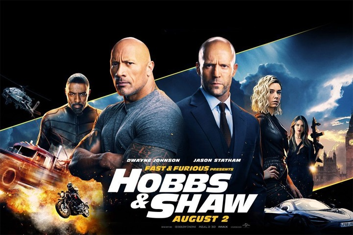

NÃO OLHE PARA CIMA: Dois astrônomos descobrem um cometa mortal vindo em direção com à Terra e partem em um tour midiático para alertar a humanidade. Só que ninguém parece dar muita bola. Uma missão e tanto chamar a atenção do público antes que seja tarde demais.

FAST & FURIOUS: HOBBS & SHAW: O agente americano Luke Hobbs chega à Inglaterra para deter uma ameaça biológica mortal. Para isso, ele deve se unir ao seu maior adversário, o mercenário Deckard Shaw.
TROCO EM DOBRO (2020): Dirigido por Peter Berg, a trama de Troco em Dobro, Spenser (Mark Wahlberg), um ex-policial mais conhecido por causar problemas do que resolvê-los, acaba de sair da prisão. Mas ele se vê obrigado a ajudar seu antigo treinador de boxe Henry (Alan Arkin) e permanece na cidade de Boston mesmo com a intenção de ir embora. Quando dois ex-colegas de Spenser são assassinados, ele recruta Hawk (Winston Duke), um lutador de MMA, para ajudá-lo a investigar e levar os culpados à justiça.